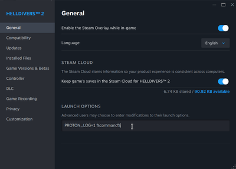

Steam 启动命令
This page is meant to provide users with different Steam 启动命令 用于 绝地潜兵 2.
启动命令用途
Steam launch commands allow 玩家 to change parameters directly at the game's engine executable during startup. Depending on the individual configuration, these arguments can 解决 compatibility conflicts, bypass performance bottlenecks or force specific optimizations.
However, be aware that because some of these commands explicitly override the game's 默认 configurations, they can also cause new problems. A 指挥 might be able to stabilize one system but might trigger 崩溃 and stuttering on another. Therefore it is imperative that you test these launch parameters sequentially, one after another and remove them immediately if you 经验值 instabilities.
说明

Please note that these launch options are strictly game-specific; the parameters you set for 绝地潜兵 2 will not affect any other titles in your Steam 图书馆. However, it is crucial to remember that launch commands persist in the Steam Cloud even if you 卸载 the game. If you perform a fresh installation in the future, these arguments will still be active and must be 已移除 manually if they are 否 longer needed.
- Open your Steam库.
- Right-Click on "绝地潜兵 2".
- Select "Properties..." from the 掉落-down menu.
- You are presented with the "基本信息" tab. On the lower part of this window there's a "Launch Options" field.
- Enter the launch 指挥 you wish to apply (分离 多个 commands with a single space).
- Close the window to save the 变更 and launch the game.
通用启动命令
| 启动命令 | 描述 |
|---|---|
--use-d3d11
|
以DX11模式启动游戏。这可以提高稳定性和性能，但仍要求用户的GPU支持DirectX 特性 Level 12_0，且不能用于绕过此要求。
|
-high
|
将《绝地潜兵2》的进程优先级设为"高"。
|
-fullscreen
|
以全屏模式启动游戏。 |
+连接_lobby 000
|
跳过开场动画，直接进入舰船。 |
--toaster_mode
|
降低画质以获取更多 FPS。在 Linux 上这可能只会降低画质，而不会提升性能。 |
Linux启动命令
For 基本信息 help with Linux specific problems, please check Linux 故障排除.
Linux users 通常 have access to a much wider array of launch parameters to 控制 how the game interacts with Proton or Gamescope. Please be aware that these are Linux-specific 环境 variables and do not have any 效果 on Windows because 绝地潜兵 2 runs natively on Windows. On Linux you'll have access to Proton, VKD3D, DXVK, etc. which Windows has 否 use for.
Proton
Proton[1] is a compatibility layer developed by Valve and is based on WINE. Unlike 标准 Windows arguments, Linux launch commands often act as "环境 variables" that dictate how Windows-native DirectX instructions are translated into Vulkan API calls that Linux can understand and 处决. When configured correctly, these variables can 改进 performance, 修复 稳定性 issues and more. However it is recommended that you only apply them if your specific hardware configuration requires a 修复.
语法
Linux launch options can look intimidating because they interact with 多个 软件 layers and system libraries simultaneously. It's 重要 to note that there's a bit of syntax, however in most cases you don't need to worry about it and if it's not done correctly, you might see that something isn't working and needs to be re-arranged.
To prevent s, your 指挥 string must follow a strict structural hierarchy:
[Variables] -> [Wrappers] -> %指挥% -> [Game Arguments]
- 环境变量（设置项）： These parameters pass configuration data to specific graphics and 翻译 libraries. You can 合并 多个 variables in 任意顺序 as long as they sit at the very beginning of the 指挥 line.
PROTON_*: Modifies the 行为 of the Proton 翻译 layer itself (e.g., generating error logs).DXVK_*: Controls the 翻译 of DirectX 9, 10, and 11 hooks into Vulkan.VKD3D_*: Controls the 翻译 of native DirectX 12 hooks into Vulkan.RADV_*: Configures the open-来源 AMD Vulkan driver within the Mesa 管道.DRI_*: Manages 正面 Rendering 基础设施 parameters (e.g., forcing a secondary laptop GPU).- 示例：
PROTON_LOG=1 DRI_PRIME=1works exactly the same asDRI_PRIME=1 PROTON_LOG=1.
- 系统包装器（工具）： Wrappers are standalone 优化 or monitoring programs, such as Feral's
gamemoderunor the hardware overlaymangohud. They must 总是 be placed after the 环境 variables but before the execution placeholder.- 示例：
PROTON_LOG=1 mangohud %指挥%
- 示例：
- 执行占位符（
%指挥%): This is a mandatory Steam token that must conclude your Linux system commands. Steam automatically replaces%指挥%with the 官员 internal installation path of the game executable.- 幕后：
PROTON_LOG=1 mangohud %指挥%translates technically into:PROTON_LOG=1 mangohud ~/.steam/steam/steamapps/common/绝地潜兵 2/bin/绝地潜兵2.exe
- 幕后：
- 游戏参数（可执行文件选项）： If you want to pass engine-specific commands directly to the 绝地潜兵 2 executable (such as forcing DirectX 11), you must append them behind the
%指挥%token.- 完整命令字符串示例：
PROTON_LOG=1 mangohud %指挥% --use-d3d11
- 完整命令字符串示例：
Linux命令
| 启动命令 | 描述 |
|---|---|
| Proton变量 | |
PROTON_ENABLE_WAYLAND=1
|
这会激活原生Wayland支持，允许游戏在不使用XWayland桥接的情况下运行。除了允许激活HDR（见下方条目）外，从技术上讲，它应该能减少延迟（通过避免桥接）并减少卡顿。
|
PROTON_ENABLE_HDR=1
|
启用 HDR 支持。指示 WINE 将 HDR 元数据从游戏传递至支持 HDR 的显示服务器（Wayland/Gamescope）。
|
PROTON_LOG=1
|
此命令可创建 proton 日志文件，用于记录异常情况，帮助排查问题。
|
PROTON_HIDE_NVIDIA_GPU=1
|
这会强制已安装的NVIDIA GPU报告自身为AMD GPU。如果在启动时遇到崩溃或严重的图形问题，这会很有用。
|
| DXVK变量 | |
DXVK_FRAME_RATE=180
|
此手动设置会覆盖游戏的最大FPS设置。如果出现原因不明的严重卡顿，它可能会有所帮助。请注意，它会覆盖任何其他存在的上限；它不会生成额外的帧。 |
| VKD3D变量 | |
VKD3D_特性_LEVEL=12_0
|
此命令告诉游戏GPU支持哪个DirectX Level。这会覆盖自动检测，如果您的系统无法检测到已安装的GPU，这可能会有所帮助。
|
VKD3D_SHADER_MODEL=6_6
|
强制转换层报告GPU可用的Shader Model为6.6。这也有助于自动检测无法识别GPU的情况。
|
VKD3D_SHADER_CACHE_PATH=[路径]
|
手动设置游戏着色器缓存的路径。否则将存储在 /steamapps/shadercache/553850.
|
| 其他变量 | |
DRI_PRIME=0
|
根据 0 或 1 强制使用独立显卡。
|
LD_PRELOAD=
|
此命令禁用 Steam 的部分功能。 |
RADV_DEBUG=nohiz
|
为AMD Vulkan驱动程序禁用hierarchical Z-Buffer，有助于解决闪烁阴影或其他渲染问题。 |
Gamescope
Gamescope[5] is a specialized micro-compositor and window manager developed by Valve for SteamOS. In simple terms, it runs games inside an isolated, high-performance "kiosk mode" sandbox. This sandboxing bypasses your desktop 环境's 重型 window constraints, giving you 正面, lower-latency access to features like hardware 分辨率 scaling, custom spatial upscaling (FSR), and strict 刷新 rate limiting.
重要： If you are playing 绝地潜兵 2 on a Steam Deck in 游戏模式, Gamescope automatically runs in the background by 默认.[6] This means Steam Deck users do not explicitly need to 类型 in the gamescope launch 指挥 unless they want to override the 默认 行为.
It is also technically possible to upscale images using Gamescope. For 示例 gamescope -w 1920 -h 1080 -W 3840 -H 2160 -F nis -- %指挥% would Upscale a 1080p internal 分辨率 to a 4K 分辨率 using NVIDIA NIS. Please be aware that the game itself already has Upscaling options, so setting this on top of the in-game settings might yield 否 效果 or cause additional problems.
请注意： Gamescope 使用次数 FSR 1 and DLSS 1.0.3 which do not have any FrameGen capabilities.
要求与语法
Please note that you have to fulfill certain 要求 in order to use Gamescope:[7]:
- AMD: Mesa 20.3 or above
- Intel: Mesa 21.2 or above
- NVIDIA: Proprietary drivers 515.43.04 or above and the
nvidia_drm:modeset=1kernel parameter.
Gamescope 使用次数 a slightly different 指挥 建筑 than 标准 Proton variables. It requires a 双短横线标志 (--) to cleanly 分离 the compositor settings from the actual Steam execution 指挥. The structural hierarchy follows this order:
[Variables] -> gamescope [Gamescope Options] -> -- -> %指挥% -> [Game Arguments]
As an 示例 to how this can potentially look:
PROTON_LOG=1 gamescope -w 1920 -h 1080 -r 120 -- %指挥% --use-d3d11
Behind the scenes, this 指示 chain triggers four sequential steps:
PROTON_LOG=1- Instructs the Proton compatibility layer to generate a diagnostic error log file on your 电脑.
gamescope -w 1920 -h 1080 -r 120- Initializes the virtual sandbox window, forcing it to render at a 1920 x 1080 分辨率 locked to a 120 Hz 刷新 rate.
-- %指挥%- Closes the Gamescope parameters and hands the 管道 over to Steam to launch 绝地潜兵 2 inside that sandbox.
--use-d3d11- Appends the final engine flag directly to the game's executable, forcing it to run in DirectX 11 rendering mode.
Gamescope命令
| 启动命令 | 描述 |
|---|---|
| Gamescope 常规变量 | |
-W, -H
|
设置 gamescope 使用的分辨率。（即显示输出分辨率）
|
-w, -h
|
设置游戏使用的分辨率。（即内部渲染分辨率）
|
-r
|
为游戏设置帧率限制，单位为每秒帧数（FPS）。
|
--hdr-enabled
|
启用HDR输出。
|
--adaptive-sync
|
如可用则启用 Adaptive Sync（可变刷新率） |
--expose-wayland
|
支持使用 xdg-shell 的 Wayland 客户端。 |
--mangoapp
|
使 MangoHud 在 Gamescope 之上运行，而非作为底层应用。 |
-–force-grab-cursor
|
强制光标锁定在游戏窗口内。 |
| Gamescope 超分辨率缩放变量 | |
-F fsr
|
通过 AMD FidelityFX Super 分辨率 1.0（FSR）进行超分辨率缩放 |
-F nis
|
通过 NVIDIA Image Scaling v1.0.3（NIS）进行超分辨率缩放 |
-S 整数
|
整数缩放 |
-S stretch
|
拉伸缩放 |
无效启动命令
Unfortunately there is a common misconception about which launch arguments are working on 绝地潜兵 2. These arguments depend on the game's engine and are not universal. Plenty of posts detail the 使用 of -dx11 or -USEALLAVAILABLECORES. As per 虚幻引擎文档, these 不要 work on Autodesk Stingray, as they are intended for the Unreal Engine. Autodesk Stingray does not recognize these parameters and will therefore simply ignore them (which is why --use-d3d11 works and -dx11 does not).